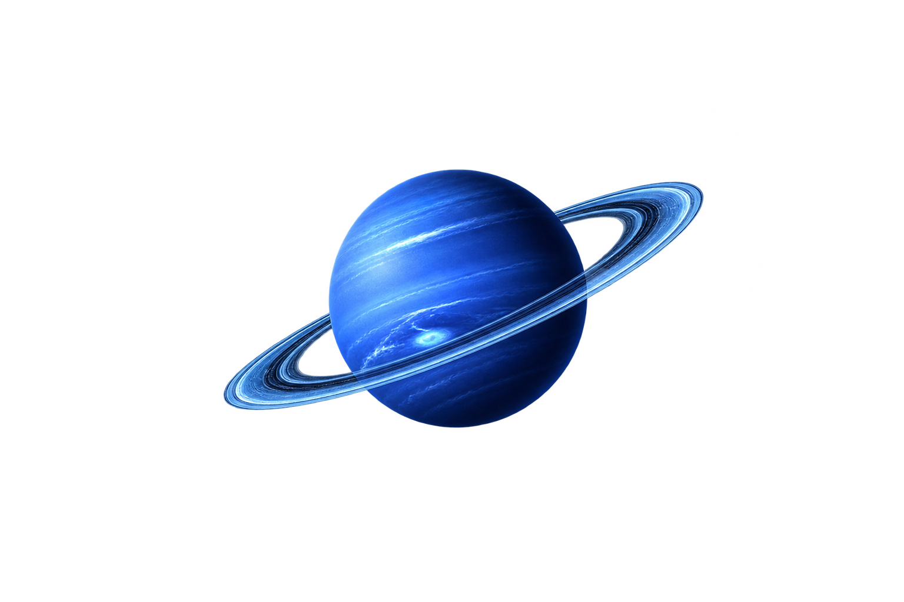

01
Netuno foi descoberto através de cálculos matemáticos em 1846.
O mais distante dos planetas gasosos do Sistema Solar, com ventos violentos e uma cor azul intensa.
← Voltar ao Sistema Solar
Netuno é conhecido por seus ventos extremos e atmosfera rica em metano, que lhe dão a tonalidade azul vibrante.
Compare a duração do dia em Netuno com outros planetas do Sistema Solar.
Netuno gira em cerca de 16 horas, tornando seu dia bem mais rápido que o terrestre.
Netuno abriga alguns dos ventos mais fortes do Sistema Solar, passando dos 2.000 km/h.
É um gigante de gelo com uma atmosfera cheia de tempestades e nuvens dinâmicas.
Os ventos em Netuno são os mais rápidos do Sistema Solar.
Netuno é muito frio, com temperaturas que podem chegar a -220°C.
Grandes tempestades escuras se formam regularmente em sua atmosfera.
Netuno foi descoberto através de cálculos matemáticos em 1846.
Ele tem 14 luas conhecidas, incluindo Tritão.
A sua cor azul é causada pelo metano e por outros componentes atmosféricos.